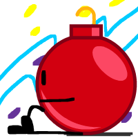

Ornament
Gender: female
Pronouns: she/her
Age: 22
Purple: no
At the age of 6, Ornament was in a horrific larynx accident. Now her voice will never be the same again… That's her defining trait. That she has a really weird voice. That's all there is.
Appears in:
Voiced by: Brittany